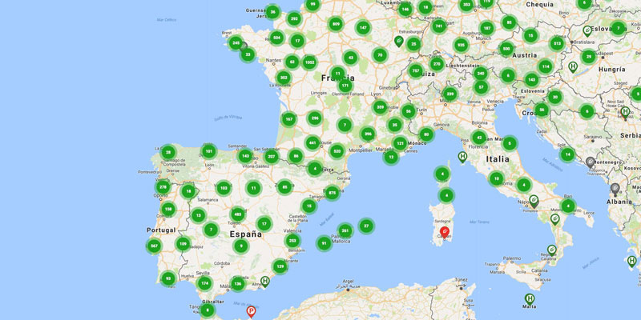

La distribución de carros eléctricos en el mundo está dominada por algunas regiones
clave, aunque el mercado se está globalizando rápidamente. Basado en las tendencias actuales
y proyecciones para 2025.
China: Es, con diferencia, el líder mundial en ventas y producción de vehículos eléctricos.
En 2024, el 60% de los VE vendidos en el mundo se matricularon en China. Para mayo de 2025,
China ya había vendido 4.4 millones de VE, lo que representa un 33% de aumento respecto al mismo periodo de 2024
y una cuota de mercado global del 61% de las ventas acumuladas del año. Su enorme mercado interno, junto con fuertes políticas de
apoyo y una creciente oferta de modelos asequibles, impulsa este crecimiento. Además, China exportó casi 1.25 millones de coches eléctricos a otros países en 2024,
incluyendo muchas economías emergentes.
Europa: Se mantiene como el segundo mercado más grande para los vehículos eléctricos. En 2024,
representó el 25% de las ventas mundiales. Para mayo de 2025, Europa había vendido 1.6 millones de VE,
con un aumento del 27% en comparación con 2024. Países como Noruega, Países Bajos, Bélgica, Suecia y Alemania tienen altas tasas
de adopción, impulsadas por políticas de incentivos y una sólida infraestructura de carga. Sin embargo, algunos países han mostrado signos de estancamiento debido a
la retirada de subsidios.
Estados Unidos: Es el tercer mercado más grande. Las ventas de vehículos eléctricos en Norteamérica (EE. UU. y Canadá)
aumentaron un 3% en los primeros cinco meses de 2025, alcanzando los 0.7 millones de unidades. Tesla es un actor dominante en este mercado,
aunque otros fabricantes están aumentando su cuota.
Aunque China, Europa y EE. UU. lideran, el crecimiento de los vehículos eléctricos se está volviendo más global.
Se observan avances notables en mercados emergentes, incluyendo:
India
Brasil
Tailandia
México: El mercado de vehículos eléctricos en México está experimentando un crecimiento acelerado.
En el primer trimestre de 2025, las ventas de vehículos eléctricos puros (BEV) en México subieron un 290% en
comparación con el año anterior, alcanzando las 20,560 unidades. La producción nacional también está en auge,
con 81,049 unidades producidas de enero a abril de 2025, un aumento del 72.27% respecto a 2024. Se proyecta que México cerrará 2025
con más de 250 mil unidades eléctricas producidas.
Costa Rica: Es notable como líder en América Latina,
con una tasa de penetración del 15% en ventas en 2024,
superando incluso a Estados Unidos y Canadá en participación de mercado
por habitante.

Producción y Modelos
La diversidad de modelos ha crecido exponencialmente. En 2015 había menos de 50 modelos de VE,
mientras que en 2024 la cifra superó los 600, con cada vez más opciones en el segmento de entrada
(más asequibles).
La inversión en tecnologías de baterías más baratas, como las LFP (Litio-Ferrofosfato), se está acelerando.
China representa más del 70% de la producción mundial de vehículos eléctricos